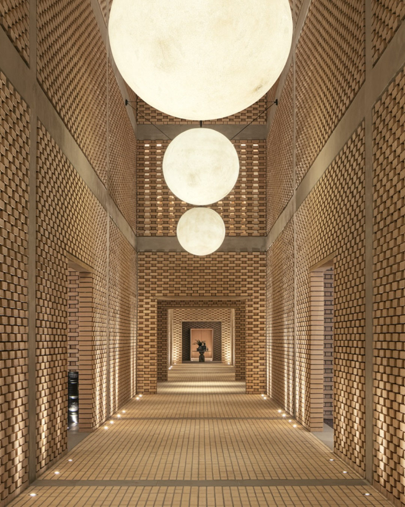
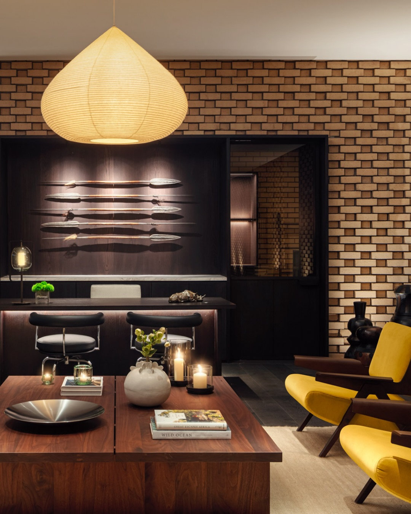
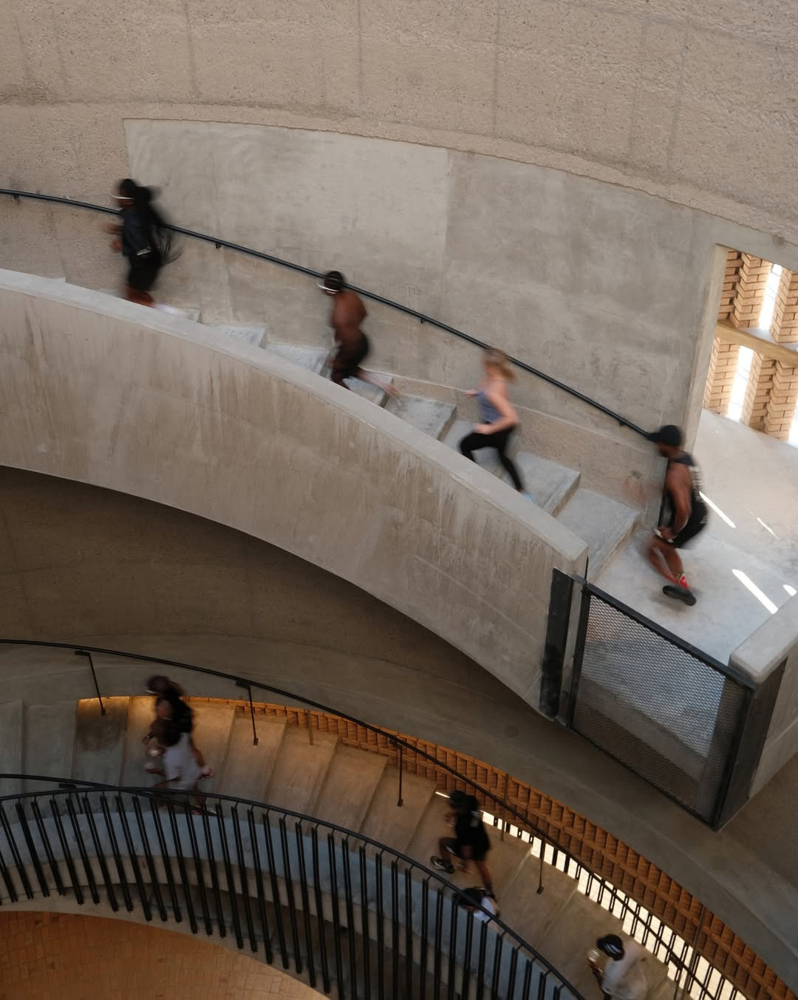
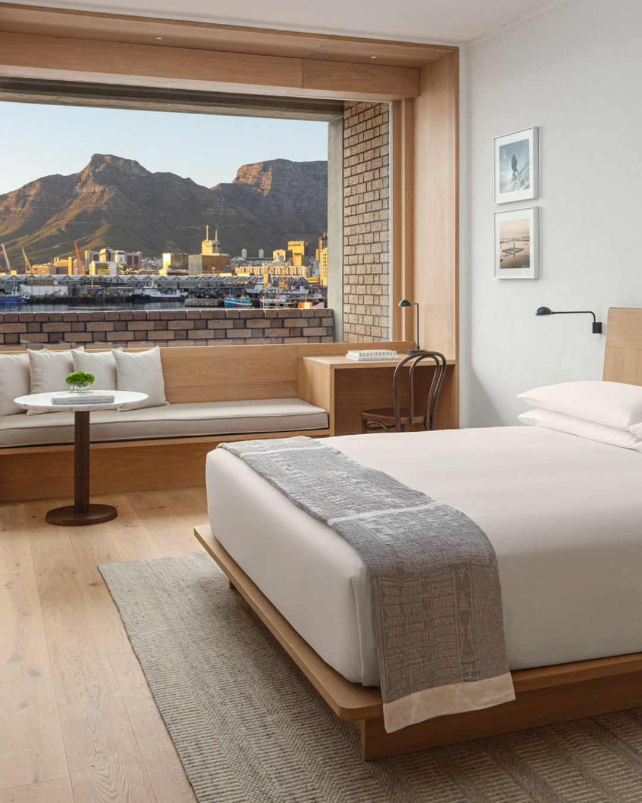
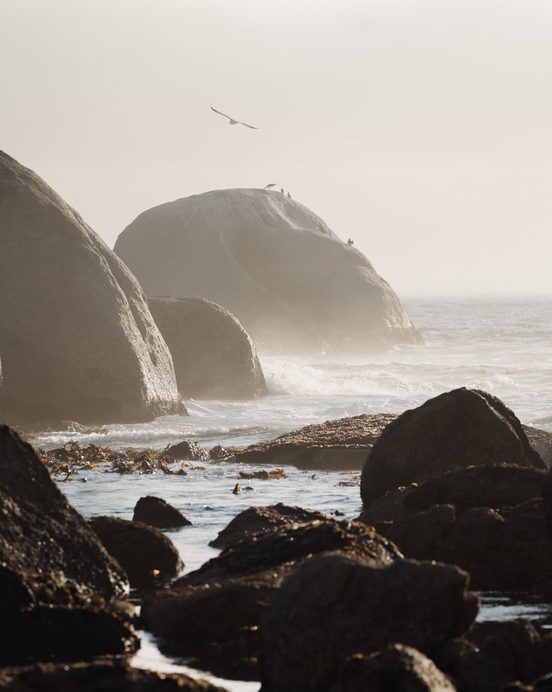
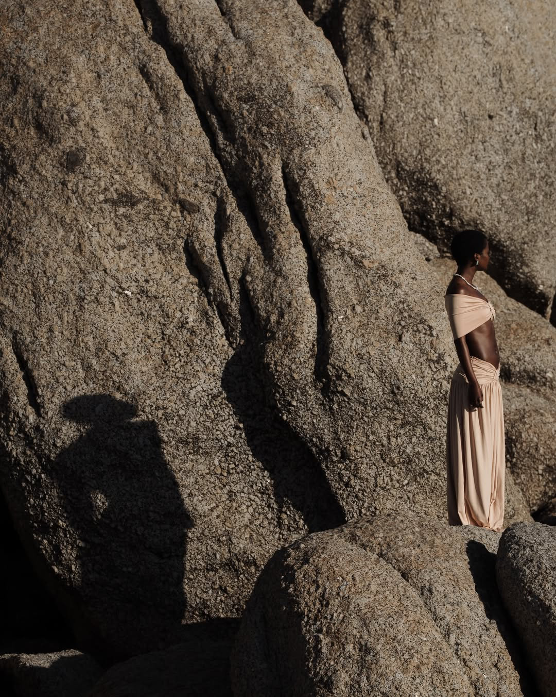

先看一张照片：暮色里的屋顶泳池，水面是蓝的，身后一整面三角形砖砌山墙被灯打亮，透过木格栅能望见港口的桅杆和桌山的轮廓。这是 The Cape Town EDITION 的屋顶，也是这家酒店全部逻辑的一个缩影——它没有把最好的视角圈进客房，而是砌了一面朝向城市的墙。
01｜先说位置
酒店落在 V&A Waterfront 的 7 号码头，正对桌山，走几步是新修的超艇码头。这个选址不是捡来的：开普敦这两年是奢华旅行榜单的常客，港口区本身就在做一轮酒店与城市空间的更新，EDITION 是其中最重的一子。
黄昏时分从港口望出去，起重机的剪影、掠过山脊的航班、慢慢沉下去的橙色的光，你大概就能理解，为什么品牌把非洲的第一间放在这里。伦敦、纽约、东京、罗马、迪拜、科莫湖之后，EDITION 把地图上最后几块大陆空格里的一块，填上了。
02｜砖，是这家酒店的语言
建筑交给如恩设计（Neri&Hu），和本地团队一起做。外立面用了超过 600 万块手工砌筑的砖，坡屋顶，水平线条，刻意压低姿态去接这座港口的工业与航海记忆。
砖没有停在外墙。走进去，走廊两侧还是砖，镂空处漏出光斑，三盏云石球灯一路垂下来，像把整条走廊砌成了取景框。室内延续这套语言：深木、皮具、黄铜色的灯罩，墙上挂着成组的非洲矛，沙发是一把明黄的扶手椅。安静，但一眼记住。


03｜The Drum：一段被跑成节日的楼梯
整栋楼里最动人的一个空间，是那个叫 The Drum 的圆柱形混凝土圆筒。旋转楼梯一圈一圈绕上去，尽头通向一处对公众开放的观景平台。开业季的照片里，有人沿着楼梯向上跑，运动服、光脚、孩子，模糊的脚步让这栋安静的建筑忽然有了心跳。
要知道，奢华酒店和城市的关系，通常是一种客气的不相往来：门房礼貌，栏杆讲究，最好看的露台留给房客。EDITION 在开普敦反着来——把制高点让给所有路过的人。

这不只是姿态，是生意。一间 142 间房的酒店，房费只覆盖一小部分账单，真正让它活起来的是白天来喝咖啡、傍晚来喝酒、周末带朋友来吃饭的本地客。餐厅 Shale 的菜单围着南非本地的渔场、牧场和酒庄转；屋顶 EAVE 把餐、酒、恒温泳池和夜晚的音乐排在一起；楼下另有 Lobby Bar 和专做分享式鸡尾酒的 Punch Room。酒店成了城市客厅，城市反过来替酒店做背书。
最高级的在地化，是让不住店的人，也愿意为了这家酒店专程进城。
04｜住进去：把港口收进一个木框
客房是另一种安静。天然材料，木与棉麻，色调压得很低。最妙的是窗：一整面墙被做成一个厚实的木框，港口、起重机、桌山，全被框在里头，像挂了一幅会随时间换光的画。
艺术部分没有糊弄，Design Network Africa 与 Southern Guild 画廊的非洲当代作品散在各处。想清楚再订的两档：112 平方米的海港套房，顶层公寓 240 平方米带整层私享。水疗五间理疗室外加一间双人套，配桑拿、蒸汽与恢复区，跑完桌山步道回来用得上。

05｜住之外：开普敦的海与光
把行程留出一整天给海岸线。从这里向南，雾从海面漫过礁石，海鸟贴着浪飞；再往好望角方向去，巨大的花岗岩丛立在沙滩尽头，光线斜下来的时候，人在石与石之间走动，像走进一组安静的雕塑。
开普敦被反复写进奢华旅行榜单，靠的从来不是某一家酒店，而是这种"城、山、海挤在同一个取景框里"的密度。EDITION 只是恰好，把密度最高的那一点圈了出来。


- 开业：2026 年 10 月 27 日，EDITION 品牌非洲首店
- 房量：142 间客房与套房；海港套房 112 平方米，顶层公寓 240 平方米
- 设计：如恩设计 Neri&Hu，逾 600 万块手工砌筑砖，The Drum 观景平台对公众开放
- 餐饮：Shale（南非物产）、屋顶 EAVE、Punch Room 分享式鸡尾酒
- 艺术：Design Network Africa 与 Southern Guild 画廊合作
- 地址：Quay 7, V&A Waterfront, Cape Town, South Africa
一家把屋顶让给全城的酒店，会不会反过来成为全城的客厅？下次去开普敦，你可以先不订房，黄昏时从 The Drum 的楼梯走上去，自己找答案。
curiohood · Stay Curious
事实核对：The Cape Town EDITION 于 2026 年 10 月 27 日官宣开业，为 EDITION 品牌非洲首店，位于开普敦 V&A Waterfront 7 号码头，142 间客房与套房，如恩设计（Neri&Hu）携本地团队完成，外立面逾 600 万块手工砌筑砖，The Drum 观景平台对公众开放，餐饮含 Shale、EAVE 与 Punch Room（行政主厨 Phil Carmichael 出自伦敦 EDITION Berners Tavern），艺术合作含 Design Network Africa 与 Southern Guild，总经理 Leonie Andereya，据万豪国际新闻稿及 The Hospitality Tribune、La Revue des Hôtels 报道。配图来自酒店官方。